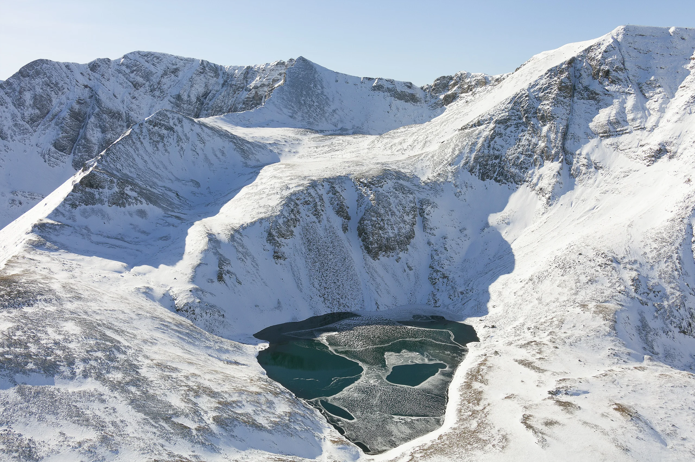

Смысл до эффектов
Сначала задача и путь клиента. Затем визуальный образ и движение.
Дизайн, разработка и интерактивные системы для бизнеса. Соединяем характер бренда с точностью технологий.
Начать проект01 О студии
ALT.WEB родился на Алтае. Здесь масштаб чувствуется в каждой линии рельефа — ту же энергию мы переносим в цифровую среду.
Создаём выразительные сайты и рабочие интерактивные сценарии. AI-инструменты помогают в процессе, но решения остаются осмысленными и собранными вручную.

Сначала задача и путь клиента. Затем визуальный образ и движение.
Типографика, ритм, состояния наведения и адаптив работают как одна система.
Не видео о продукте, а работающие калькуляторы, фильтры и демонстрационные сценарии.
02 Экспертиза
От одной страницы до интерактивного модуля. Наведите на направление, чтобы увидеть пример.
03 Избранные демо
Не выдуманные клиентские результаты, а полноценные демонстрационные проекты с работающей механикой.
 Демонстрационный проект
Демонстрационный проект
Осмотр лака при разном свете, сравнение полировки и расчёт программы ухода.
Разбор кейсаКаталог с фильтрами, проверка габаритов и смета. Интерфейс помогает выбрать, а не просто листать товары.
Открыть магазин Демонстрационный проект
Демонстрационный проект
04 Простой старт
Фиксированный объём помогает быстро запуститься и проверить спрос, не растягивая проект на месяцы.
Обсудить лендингОффер, условия, ответы на вопросы и путь к заявке.
Макет, адаптивная вёрстка и проверка основного сценария.
Два раунда правок, исходники и объяснение, как менять контент.
Срок начинается после согласования структуры и получения материалов. Дополнительные страницы и интерактивные модули считаются отдельно. Все услуги.
05 Процесс
Каждый этап заканчивается конкретным артефактом и согласованием следующего шага.
Определяем аудиторию, задачу и действие, к которому ведём посетителя.
Собираем структуру и содержание до визуальных эффектов.
Создаём систему, адаптируем и оживляем ключевые сценарии.
Тестируем на разных экранах, передаём исходники и запускаем.